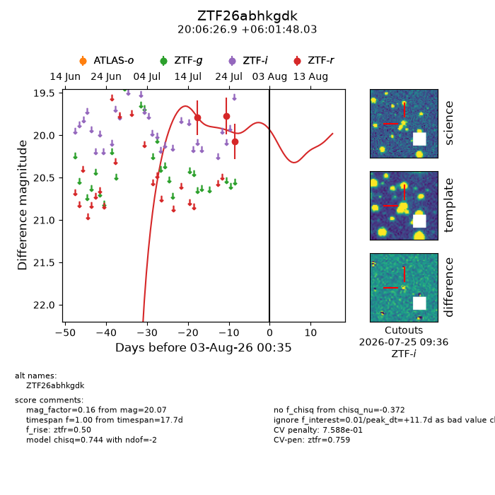
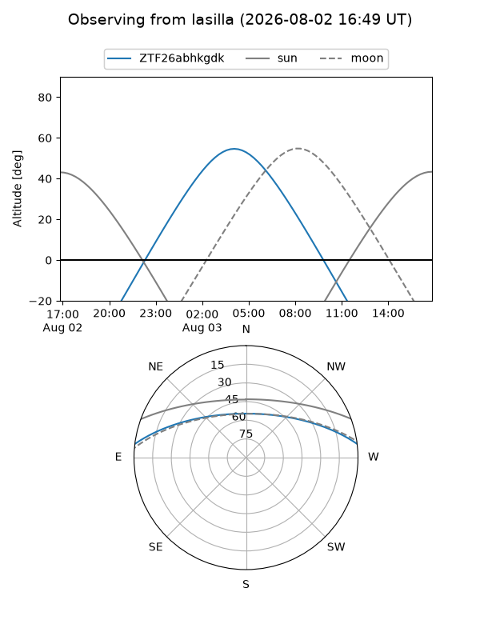
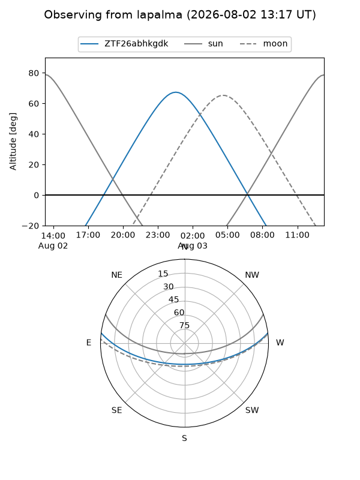
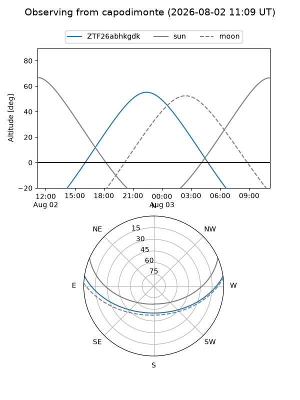
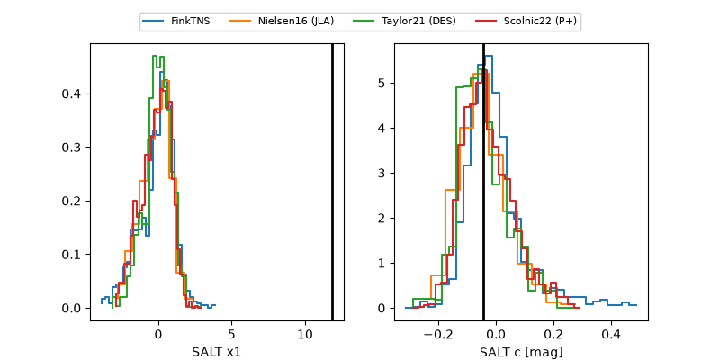

ZTF26abhkgdk
Target ZTF26abhkgdk at 2026-08-03 12:17
Aliases and brokers:
FINK-ZTF: ztf.fink-portal.org/ZTF26abhkgdk
Lasair-ZTF: lasair-ztf.lsst.ac.uk/objects/ZTF26abhkgdk
ALeRCE-ZTF: alerce.online/object/ZTF26abhkgdk
Direct TNS query: direct search
alt names
ZTF26abhkgdk (ztf,fink_ztf)
Coordinates:
equatorial (ra, dec) = 301.6122,+6.03001
equatorial (HMS+DMS) = 20:06:26.93,+06:01:48.03
galactic (l, b) = (47.1887,-13.68793)
Flags:
peak dt: +12.2
likely cv: !!
Photometry:
last ztfr=20.07
3 ztfr detections
Lightcurve

Visibility



Additional plots
